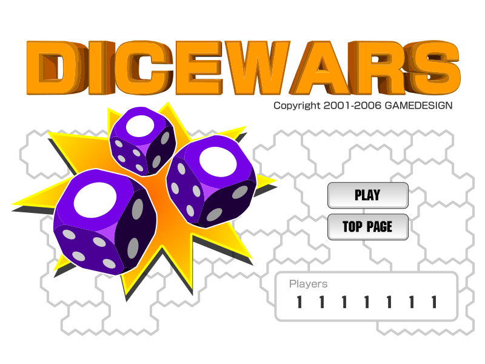
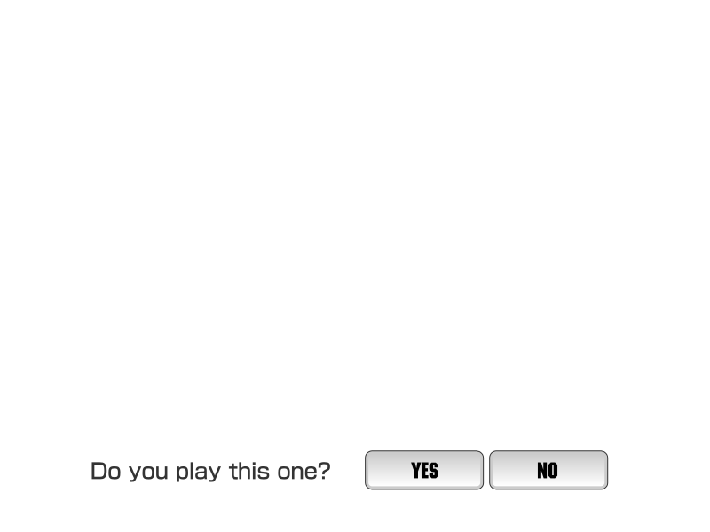
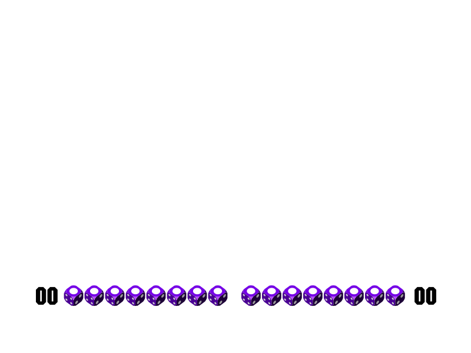
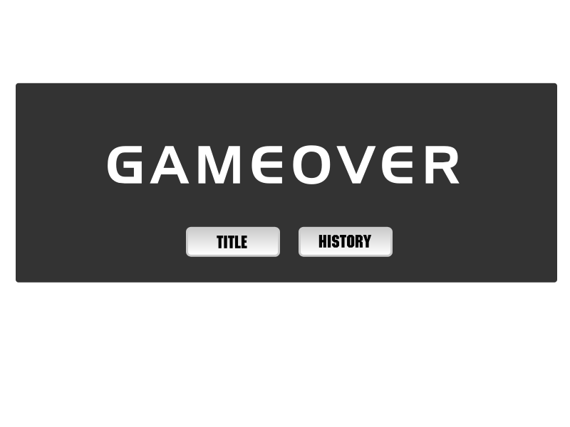
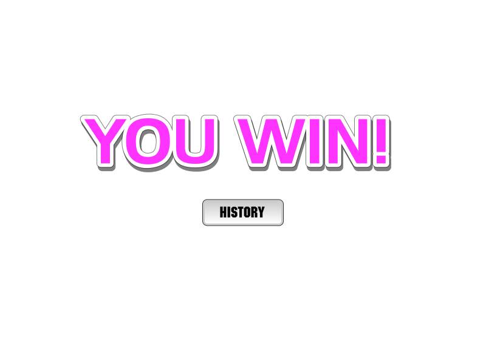
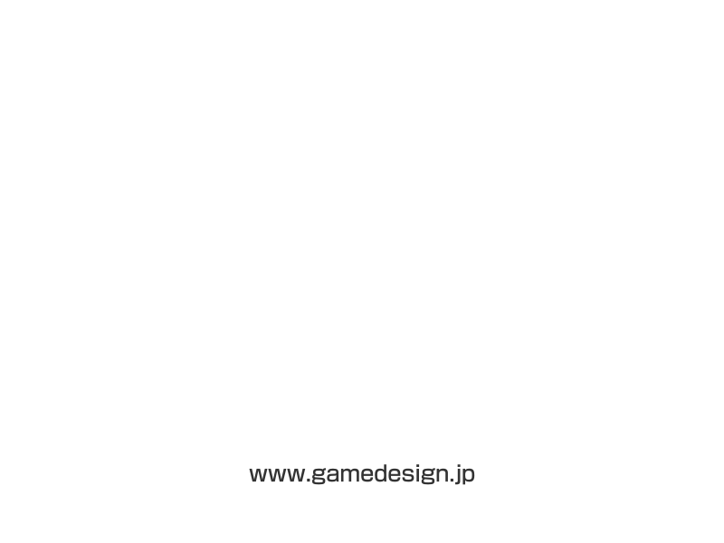
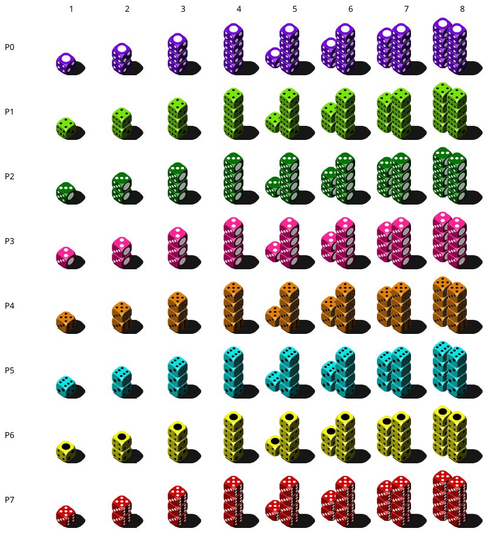
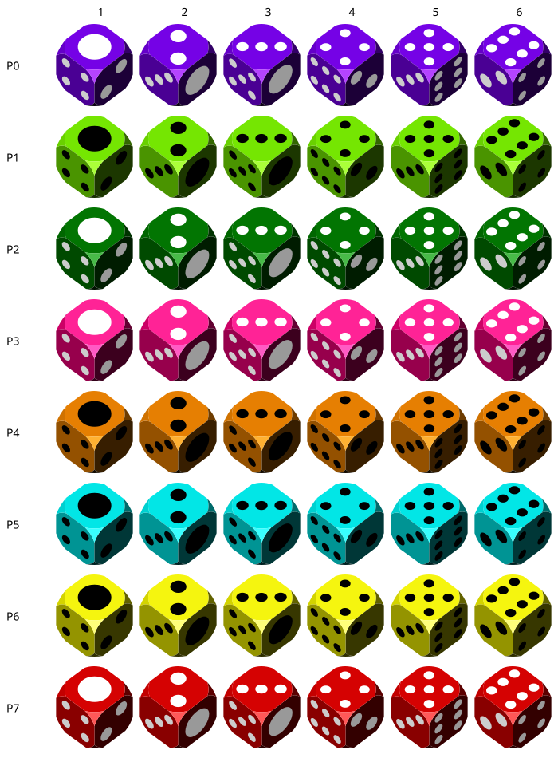

Permanent research evidence for the native Dice Wars port. The drawings are exported from the original vectors, so enlargement preserves their shapes. These are authored-layer reconstructions, not screenshots of a running Flash Player. Read the note above every image.
Source SHA-256: 0690936010c150a0f2592e838dbbb9deebaef24e448c89f8c60f2f6667dbb7d1
Before AS2: player digits are placeholder 1s and dice colors/faces are not randomized. The live title uses 2–8 with 7 selected.

The procedural map and global Back to Title button are separate layers.

Before AS2: all 16 default dice and placeholder totals are visible. Runtime hides them, then reveals attacker (right), defender (left). Map and HUD remain behind this layer.

The real map remains behind the translucent rectangle; this reference has white behind it.

The real map and HUD remain visible behind this layer. Only History is added here; the global title button remains.

The replay map is drawn by AS2. No mcBar, mcSlider, or mcReplay instance exists in this SWF despite script references.

Direct vector exports; rows are player IDs. Registration and scale are specified in the reference.

Direct vector exports; rows are player IDs. Registration and scale are specified in the reference.

Raw MP3 evidence. This browser player does not apply the SWF seek/sample-count metadata.